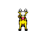
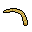
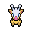

Pokédex / #203

Girafarig #203
NormalPsychic
Its tail, which also contains a small brain, may bite on its own if it notices an alluring smell.
Generation 2 · Johto

Stats
| Attack | 80 | |
|---|---|---|
| Defense | 65 | |
| Sp. Atk | 90 | |
| Sp. Def | 65 |
In the wild
| Wild level | 40–50 |
|---|---|
| HP | 70 |
| Experience | 12 |
| Egg groups | Field |
Evolution
- Does not evolve.
Moves
| Level | Move | Type | Category | Power | Energy | Cooldown | Effect | |
|---|---|---|---|---|---|---|---|---|
| 1 | Tackle | Normal | Physical | 15 | 15 | 1s | Tackle is one of the most common and basic moves a Pokemon learns. It deals damage with no additional effects. | |
| 5 | Confusion | Psychic | Special | 50 | 60 | 12s | Confusion deals damage and has a 10% chance of confusing the target. | |
| 10 | Double Hit | Normal | Physical | 35 | 65 | 11s | Double Hit hits twice in one turn. | |
| 15 | Assurance | Dark | Physical | 60 | 70 | 13s | Assurance does damage and has no secondary effect. | |
| 20 | Stomp | Normal | Physical | 65 | 75 | 9s | Stomp deals damage and has a 30% chance of causing the target to flinch. | |
| 25 | Psybeam | Psychic | Special | 65 | 70 | 16s | Psybeam deals damage and has a 10% chance of confusing the target. | |
| 30 | Wish | Normal | Status | – | 100 | 90s | The turn Wish is used, the user will make a wish. At the end of the next turn, the Pokemon will be healed by half its own maximum HP. | |
| 35 | Psychic | Psychic | Special | 90 | 100 | 21s | Psychic deals damage and has a 10% chance of lowering the target's Special Defense by one stage. | |
| 40 | Zen Headbutt | Psychic | Physical | 80 | 80 | 15s | Zen Headbutt deals damage and has a 20% chance of causing the target to flinch. | |
| 45 | Crunch | Dark | Physical | 80 | 80 | 12s | Crunch deals damage and has a 20% chance of lowering the target's Defense by one stage. | |
| 50 | Agility | Normal | Status | – | 80 | 20s | Agility raises the user's Speed by two stages. | |
| 55 | Future Sight | Psychic | Special | 120 | 120 | 15s | Future Sight deals damage, but does not hit until two turns after the move is selected. | |
| 60 | Iron Tail | Steel | Physical | 100 | 100 | 15s | Iron Tail inflicts damage and has a 10% chance of lowering the target's Defense stat by one stage. | |
| 65 | Magic Coat | Psychic | Status | – | 100 | 90s | Any move is reflected back to the attacker. |
Field abilities
StrengthFindFlashRock SmashRideHeadbuttBlinkTeleport
Special abilities
Inner FocusEarly Bird
Egg moves
AmnesiaBeat UpDouble KickForesightFuture SightMagic CoatMean LookMirror CoatRazor WindSecret PowerSkill SwapTake DownWish
Technical machines
BideCalm MindDouble EdgeDouble TeamDream EaterEarthquakeEnergy BallHeadbuttIron TailLight ScreenMimicMud SlapNightmarePsychicRageRain DanceReflectRestShadow BallShock WaveSubstituteSwiftThunderThunder WaveThunderboltToxicZap Cannon
Drops
| Item | Amount | Chance | |
|---|---|---|---|
| bamboo leaves | 1 | 100% | |
| bunch of sugar cane | 1 | 100% | |
| bamboo stick | 1 | 100% | |
| twisted spoon | 1 | 25% | |
| iron loadstone | 1 | 20% | |
 | syrup | 1 | 5% |
| luminous orb | 1 | 5% | |
| red apple | 1–5 | 5% | |
 | girafarig doll | 1 | 0.1% |
| Mind Plate | 1 | 0.025% | |
| Love Plate | 1 | 0.025% | |
| TM 27 | 1 | 0.01% | |
| TM 49 | 1 | 0.01% | |
| held silk scarf | 1 | 0.01% | |
| held twisted spoon | 1 | 0.01% |